Character kit
Every hero in the Forge starts from this kit, and nothing in it costs a credit: twelve bodies, eleven hair styles, three beards and 23 pieces of gear. Generation only fills what's missing. Once a player generates a piece, it joins the repository and everyone else can wear it free.
Bodies
Six sizes in two builds. Each size is its own body, not the medium one stretched, so a tiny hero is a compact adult and a huge one has a brawler's frame. Colossal is the transformation size: a hero whose ultimate transforms swaps into that body mid-fight. The game still scales each body by its size class, because the size sets the hitbox.
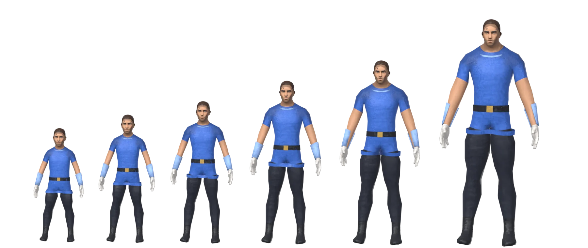
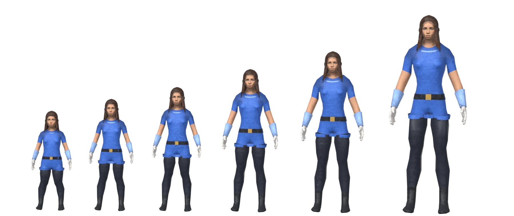
Hair and beards
Every body carries all of these at once and the look decides which one shows, so switching is free and instant. Beards fit either build.
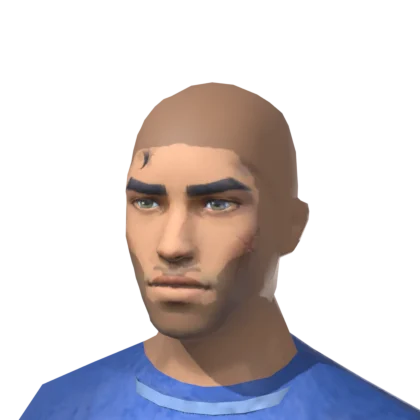
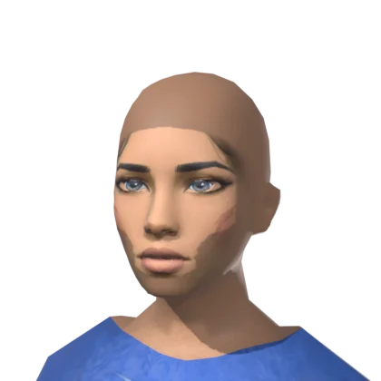
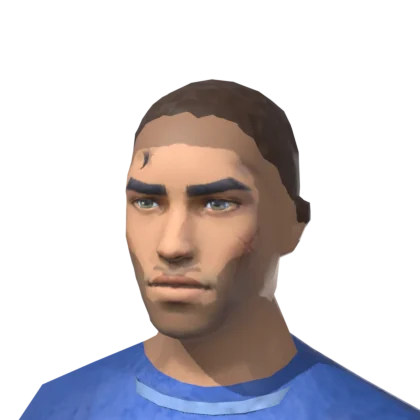
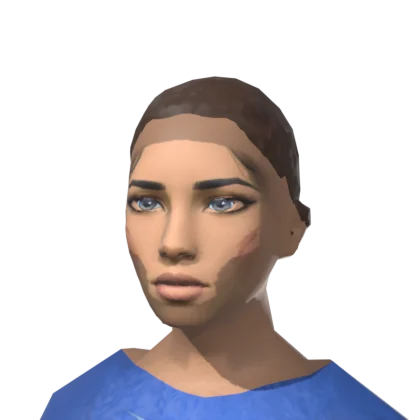
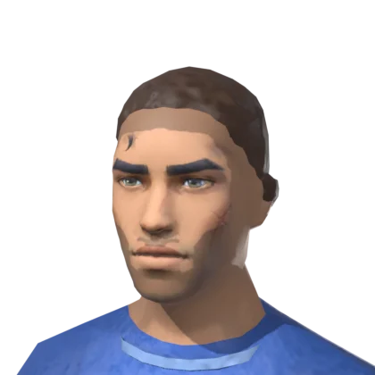
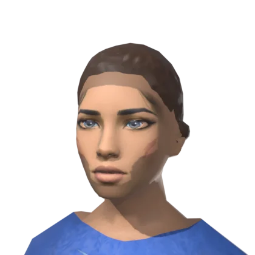
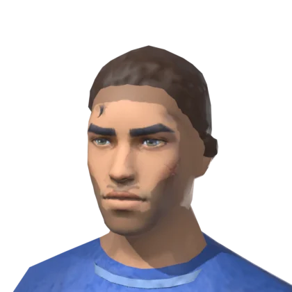
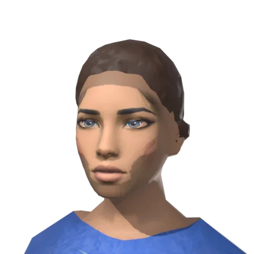
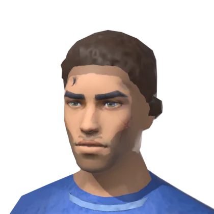
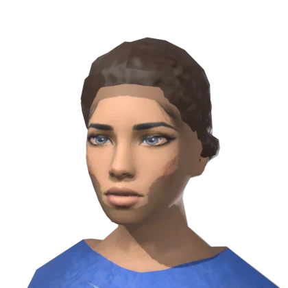
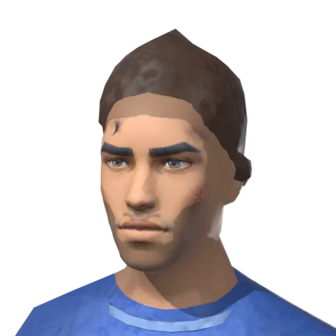
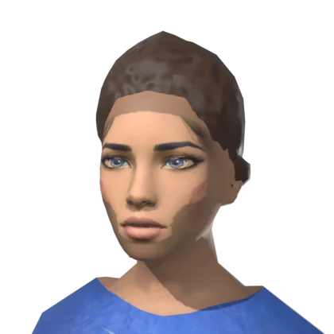
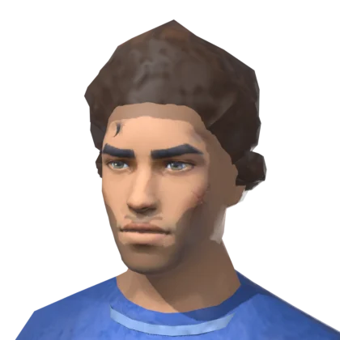
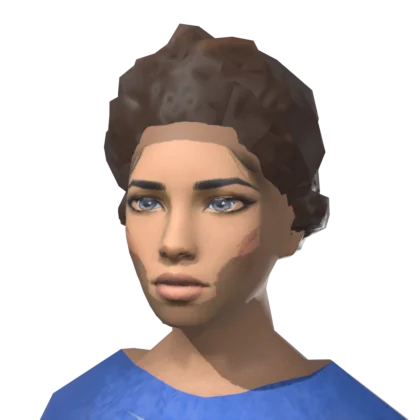
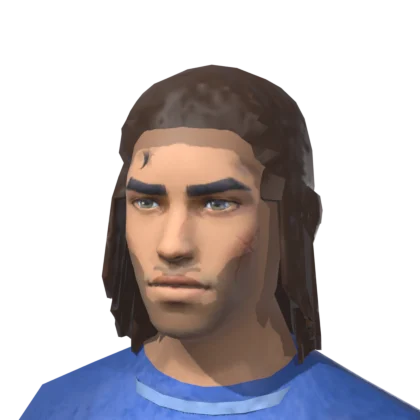
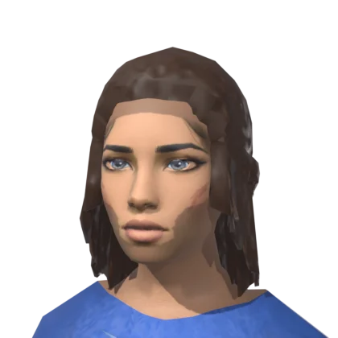
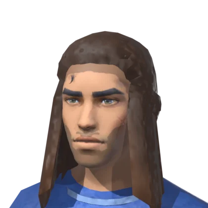
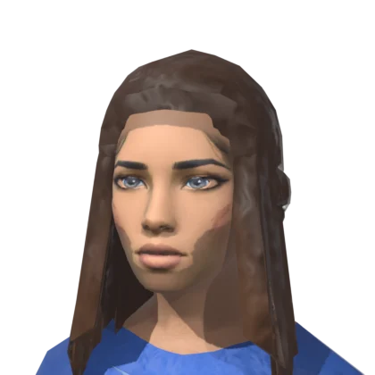
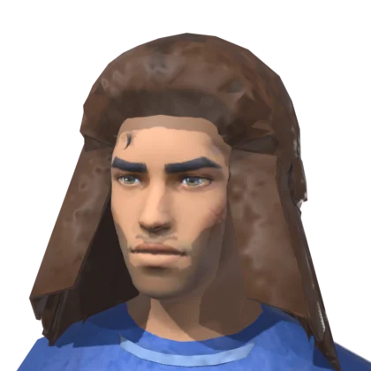
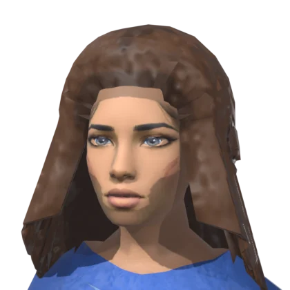
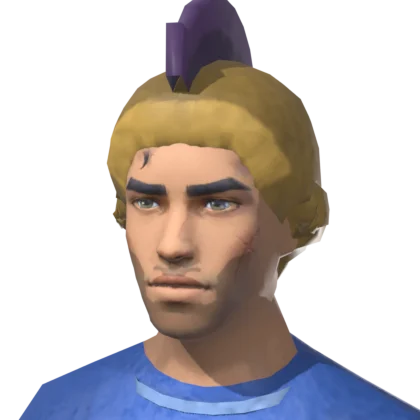
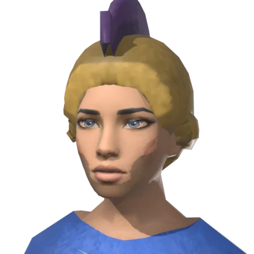
Beards
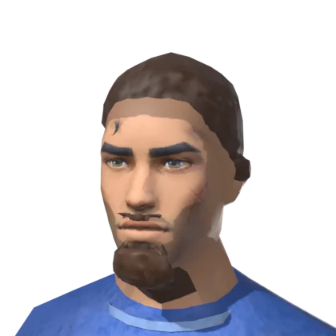
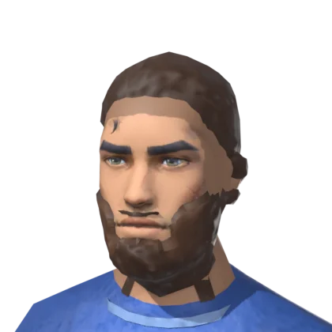
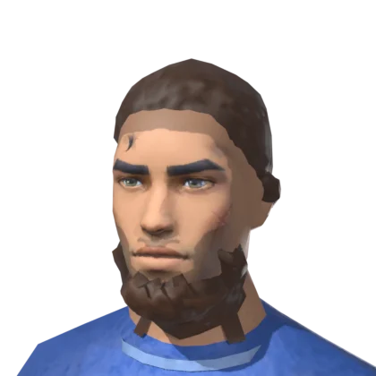
Gear
Rigid pieces, each its own small model of 4 to 12 KB. The pipeline puts five sockets on every body, and a piece hangs on one, so any piece fits any body and follows every animation. A piece with a colour slot takes the colour picked beside its row in the Forge. The prompt picks pieces too: "a knight" gets a sword and a shield.
| Socket | Where it sits | What fits |
|---|---|---|
| Head | On the hairline, scaled to the body's head | Hats, crowns, helms, a halo |
| Face | In front of the eyes, scaled to the head | Glasses, shades, a visor, an eyepatch |
| Right hand | In the palm, the length along the thumb | Any hand piece |
| Left hand | The same on the left | Any hand piece, plus shields and bows |
| Back | Between the shoulder blades | Wings, a jetpack, a quiver |
Head
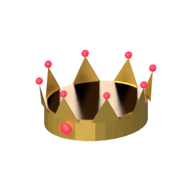
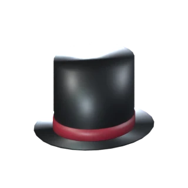
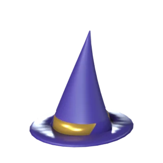
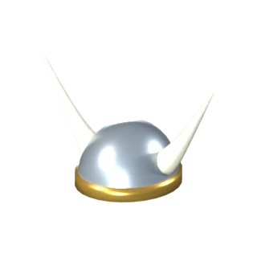
Face
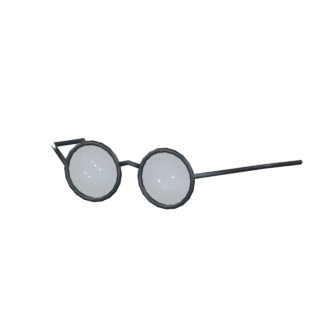
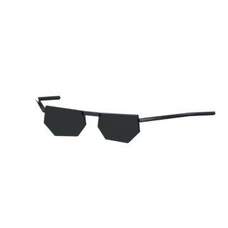
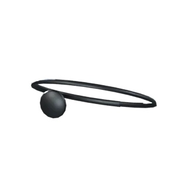
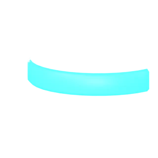
Either hand
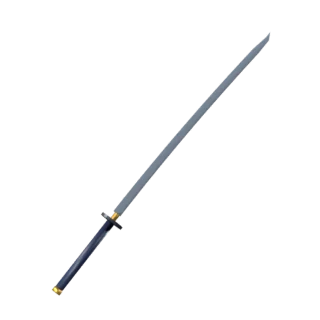
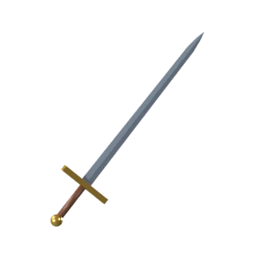
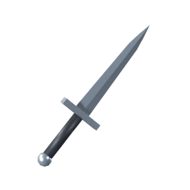
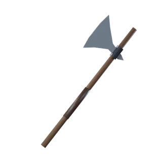
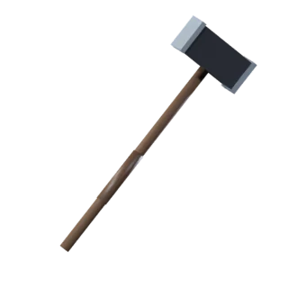
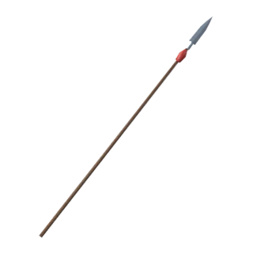
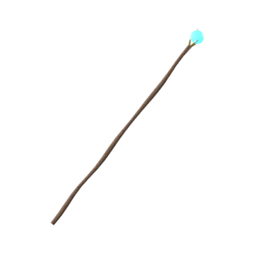
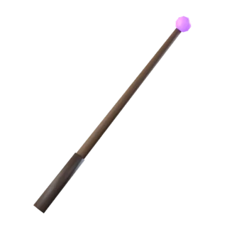
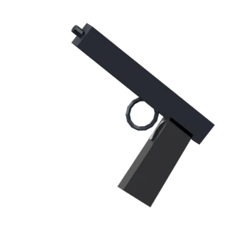
Left hand only
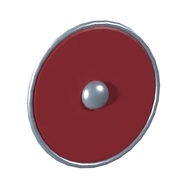
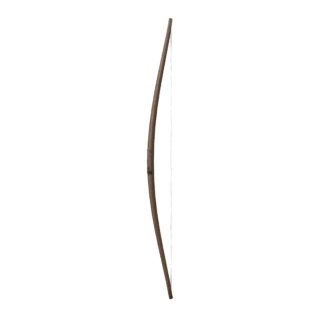
Back
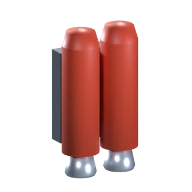
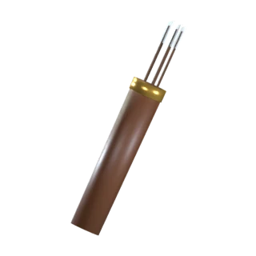
Making more
Built-in pieces come from tools/blender/pieces.py. Blender -b --python tools/blender/pieces.py -- --only katana rebuilds one piece, its thumbnail and the list the game reads in src/kit/pieces.gen.ts. Bodies come from tools/blender/human.py, and tools/blender/kit_sheet.py redraws this page.